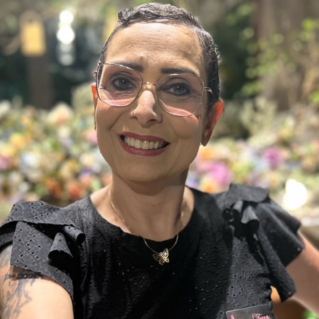
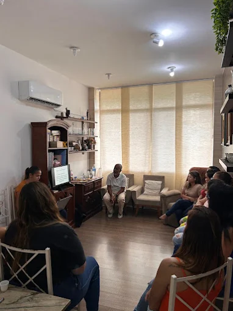
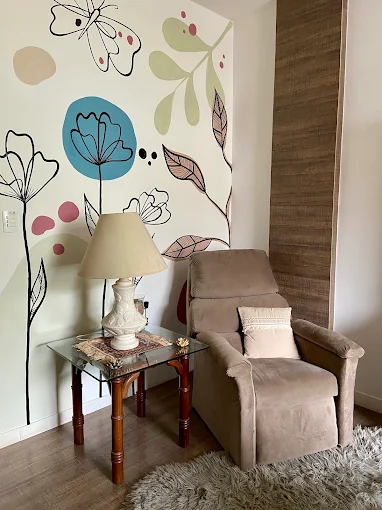

Um espaço para escutar as muitas partes que formam você.
A MAT Espaço Múltiplo é um consultório de psicanálise e constelação familiar em Nova Iguaçu, dedicado a acolher histórias, vínculos e repetições que pedem espaço para serem olhadas com cuidado.
Duas abordagens, um mesmo cuidado
Cada pessoa carrega mais de uma história — a sua própria e as que vêm de antes dela. O trabalho aqui caminha entre a escuta individual e o olhar sobre os sistemas familiares.
Psicanálise
Um processo de escuta continuada, em que a fala livre abre caminho para compreender repetições, sintomas e desejos que muitas vezes ficam fora do alcance da razão do dia a dia.
Constelação familiar
Uma prática vivencial que revela dinâmicas ocultas entre membros de uma família ou sistema, ajudando a entender lealdades invisíveis e encontrar novos lugares dentro dessas relações.
Quem conduz os atendimentos
Obertal e Claudia dividem a condução dos trabalhos individuais e das constelações em grupo.

Obertal
Psicanalista e facilitador de constelações familiares, com atuação voltada à escuta individual e à condução de vivências em grupo.

Claudia
Psicanalista e facilitadora de constelações familiares, atuando em sessões individuais e no acompanhamento de processos em grupo.
Formas de atendimento
O trabalho se organiza de acordo com o que cada momento pede — sozinho, em grupo ou com a família.
Psicanálise individual
Sessões regulares e presenciais, num ritmo combinado com cada pessoa, para um trabalho de escuta contínuo.
Constelação familiar individual
Atendimento voltado a uma questão específica, usando recursos da constelação num encontro particular.
Constelação em grupo
Vivências coletivas em que as questões de um participante são representadas com a ajuda do grupo presente.
O que dizem sobre esse espaço
Avaliações de quem já passou por aqui, direto do Google.
Um atendimento muito acolhedor, senti que fui ouvida de verdade desde a primeira sessão.
Avaliação no GoogleA experiência com a constelação familiar me ajudou a enxergar coisas que eu carregava sem entender.
Avaliação no GoogleEspaço tranquilo, atendimento cuidadoso e muito profissional.
Avaliação no GoogleO espaço em imagens
Um pouco do ambiente e de quem conduz os atendimentos.



Onde estamos
Atendimento presencial em Nova Iguaçu, com horários combinados previamente.